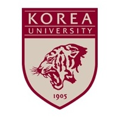
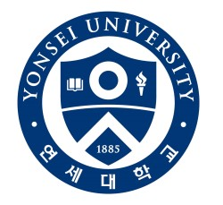
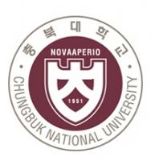

Seoul National University
Seoul National University
From the Start of the New Nation Korean people have always maintained their faith in the power of education, even through colonial occupation and war during the tumultuous first half of the 20th century. Thus in 1946, just months after Korea regained its independence, Seoul National University was established as the first piece of the educational foundation for the new nation. After a few short years, the campus had to be abandoned at the start of the Korean war in 1950, as civilians fled south to escape the frontlines. But the passion of the professors and students sustained the school through the war, with classes held outside refugee camps.
Comprehensive Research University Thanks to this 'education fever', Seoul National University has grown remarkably in the past six decades. Now comprising 16 colleges and associated graduate schools, 6 professional graduate schools, and 65 research institutes, the SNU community has expanded to nearly 23,000 students and 2,500 faculty members. It has moved to Gwanak campus which has 192.366km2 of campus and 300 of buildings for education and research. SNU is in building new campuses outside of Gwanak such as 'Bio information technology port at Cheongna(0.6km2, by 2017), Advanced institute of convergence technology...

Korea University
Korea University was the nation's first university funded and administered solely by Koreans. The university was founded in 1905 by Lee Young-Ik, Treasurer of the Royal Household, whose idea and vision was that only by educating the younger generations could Korea secure its independence and grow and prosper as a nation. For one-hundred years now, Korea University continues to maintain the spirit of its founder. Today, the university strives to educate its students to become effective citizens, highly capable in their chosen fields, who will dedicate themselves to serving the nation and world to the best of their abilities.
Korea University is home to over 33,000 students from all parts of the nation and ever corner of the globe. Students at the university are enrolled in eighteen colleges and divisions, and eighteen graduate schools, ranging from the Humanities to Engineering and Science, the East Asiatic Research Center, the Korean Cultural Research Center, and the recently established inter-disciplinary Graduate School of International Studies.
The university also has highly regarded professional schools of Law, Medicine, Engineering, and Business Administration. In addition, the university maintains a fine teaching hospital, Korea University Hospital, which provides excellent medical care for its patients, and trains student doctors and nurses who will serve the nation and the world in the years to come.
The university's spacious and wooded campus of over 182 acres is in the heart of Seoul in the An-Am neighborhood and is convenient to subway and metro bus lines. The architecture of the campus is in the Gothic style of Middle Ages Europe. Inside the majestic buildings students enjoy learning in comfortable, attractive classrooms and modern, up-to-date laboratories. In addition, fully equipped computer centers are located all over campus. For the students' convenience and relaxation, there is the new Central Plaza with restaurants, coffee shops, a book store, and study rooms.
The university faculty numbers more than 1,10095 percent of whom hold a Ph.D., or the highest degree in their fields. Although many faculty members have achieved international reputations through their scholarly work and research, itis their teaching that most distinguishes them and the university, and benefits the students. All of the faculty share the commitment of bestowing on the students of Korea University an education of the highest quality that will prepare the students to be leaders and innovators in their fields of endeavor.
Korea University achieved much in its first one-hundred years, but this is only a beginning. As the university continues to attract highly capable and deserving students and provide them with the best educational opportunities possible, the university also strives to maintain itself as not only one of the best universities in Korea and in Asia. The goal of the university is to be nothing less than to be one of the great universities on Earth.

Yonsei University
Yonsei University welcomes prospective graduate students who are looking forward to experiencing an outstanding academic environment at Yonsei. Since Yonsei University Graduate School was founded in 1950, over 6,000 Doctoral Degrees and 26,000 Master's Degrees in humanities, social sciences, natural sciences, medical sciences, and other academic fields have been conferred on fine scholars and competent researchers. Yonsei University Graduate School strives to create the best graduate school programs and curricula by inspiring exceptional students with the current academic issues of the rapidly-changing world. The Graduate School of International
Studies at Yonsei University was established in 1987 as a pioneer of professional studies programs in Korea. The founding motivation of Yonsei GSIS was to meet the growing global demand for international academic institutions and to train individuals to become global experts. The Yonsei GSIS is Korea's leading professional graduate school of international studies. The dynamic and rigorous curriculum equips students with theoretical knowledge and practical skills necessary to excel globally, in the private and public sectors. The English-based Global MBA (GMBA) program brings forth a new level of management education to match heightened demands and possibilities of this new economy. The full-time option requires at least 4 terms of coursework over...

Chungbuk National University
Since its establishment in September, 1951, Chungbuk National University has produced more than 150,000 graduates who have been actively contributing to the development of our society in various walks of life. The central location of our university is one of its big strengths. Not only is Chungbuk National University campus located close to the Sejong Government Complex, Osong Biovalley, Innopolis Daedeok, and the Ochang Scientific Industrial Complex, it is also a short distance away from Osong (Cheongju) station on the KTX line and the Cheongju International Airport, allowing easy access. In recent years Chungbuk National University has grown
into a full-fledged global educational institution that promotes active exchange with other organizations abroad. Chungbuk National University has set its goal to become one of the top 100 universities in Asia and one of the top 10 universities in Korea. It is a genuine forum and venue for learning. We ask for your continued support as we forge ahead with our initiatives in becoming 'Heart of Korea, Creative Communiversity for Dreams.